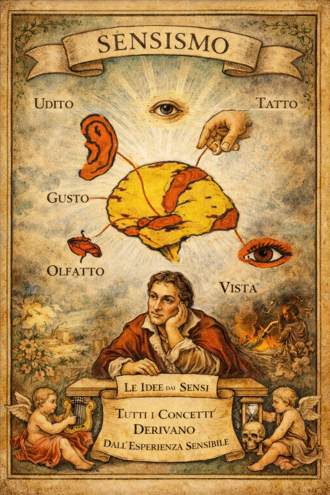
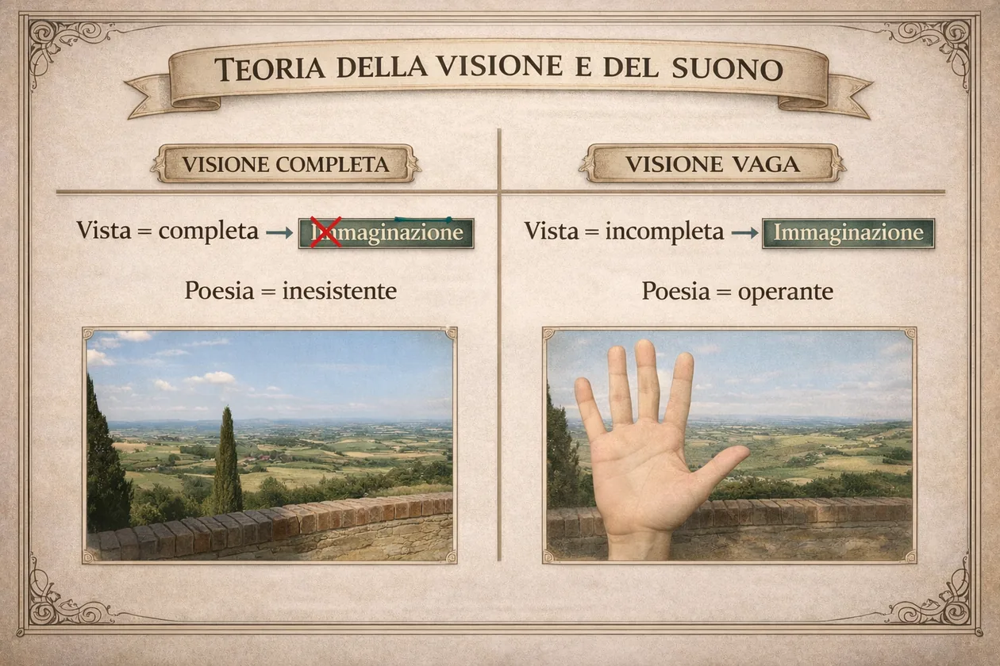

Il definito
La mente osserva un oggetto con confini riconoscibili. Conosce ciò che vede. Anche il definito può essere poetico, ma non attiva necessariamente l’effetto dell’indefinito.
L’infinito / Cerchio 02 · La poetica
Leopardi scopre quanto sia poetico ciò che non possiamo vedere o percepire del tutto. Da una sensazione incompleta nasce la possibilità di immaginare.
Nella cultura filosofica settecentesca che influenza Leopardi, la conoscenza parte dall’esperienza sensibile: vedere, ascoltare, toccare. Ma la mente non si limita a registrare ciò che riceve: associa, ricorda, immagina.
«Sensismo» indica una tradizione filosofica, non una formula secondo la quale ogni immagine poetica sarebbe un semplice effetto automatico dei sensi.

Una percezione perfettamente delimitata ci dice che cosa c’è davanti a noi. Una percezione incompleta può suggerire ciò che sta oltre. È lì che immaginazione e desiderio di infinito trovano spazio.
La mente osserva un oggetto con confini riconoscibili. Conosce ciò che vede. Anche il definito può essere poetico, ma non attiva necessariamente l’effetto dell’indefinito.
Un orizzonte nascosto, un suono lontano, una luce incerta lasciano margini aperti: la mente può figurarsi spazi e possibilità non presenti alla vista.


Esperimento interattivo · La siepe
È l’esperienza che incontriamo in L’infinito: «questa siepe» impedisce di vedere gran parte dell’orizzonte. Proprio oltre quell’ostacolo, il poeta immagina «interminati spazi».
Anche l’udito suggerisce ciò che è lontano, nascosto o non precisamente definito: un canto che arriva da lontano, il vento tra le foglie, una voce indistinta. In L’infinito, il vento reale risveglia il confronto con il silenzio immaginato.
Ascolta · Simulazione sonora
È un suono sintetizzato dal browser per l’attività: non è una registrazione naturalistica né una ricostruzione storica.
Da una parte «quello infinito silenzio», immaginato; dall’altra «questa voce», il suono presente del vento. Il confronto conduce il pensiero dall’infinito dello spazio a quello del tempo.
Una percezione può riaprire immagini e sentimenti del passato. Per Leopardi la rimembranza, soprattutto quella legata all’infanzia, è una sorgente importante di suggestione poetica, perché restituisce esperienze filtrate dall’immaginazione.
La rimembranza è centrale nella poetica leopardiana, ma in L’infinito i procedimenti più evidenti sono la vista ostacolata, l’immaginazione dell’immensità e il confronto tra silenzio e suono. Non inventiamo ricordi infantili che il testo non nomina.
Sono parole che allargano mentalmente lo spazio e il tempo. La poesia non descrive un infinito visibile: ne costruisce un’esperienza interiore.
L’infinito è composto nel 1819. Le formulazioni più sistematiche della poetica del vago e dell’indefinito, della visione e del suono si trovano nello Zibaldone anche in anni successivi. Le usiamo per interpretare il testo, senza immaginare che Leopardi le avesse già organizzate in un manuale nel 1819.
No. Nella riflessione leopardiana la vista incompleta è una sorgente privilegiata del vago e dell’indefinito, non l’unica possibilità poetica.
Lo stormire del vento tra le piante, ascoltato realmente e confrontato con il silenzio infinito immaginato.
Perché limita la vista e allo stesso tempo permette all’immaginazione di figurarsi uno spazio senza confini.
Riferimenti: Treccani, «Giacomo Leopardi» · Treccani, «L’infinito» · Leopardi, Zibaldone (teoria del piacere, dell’indefinito e del ricordo).